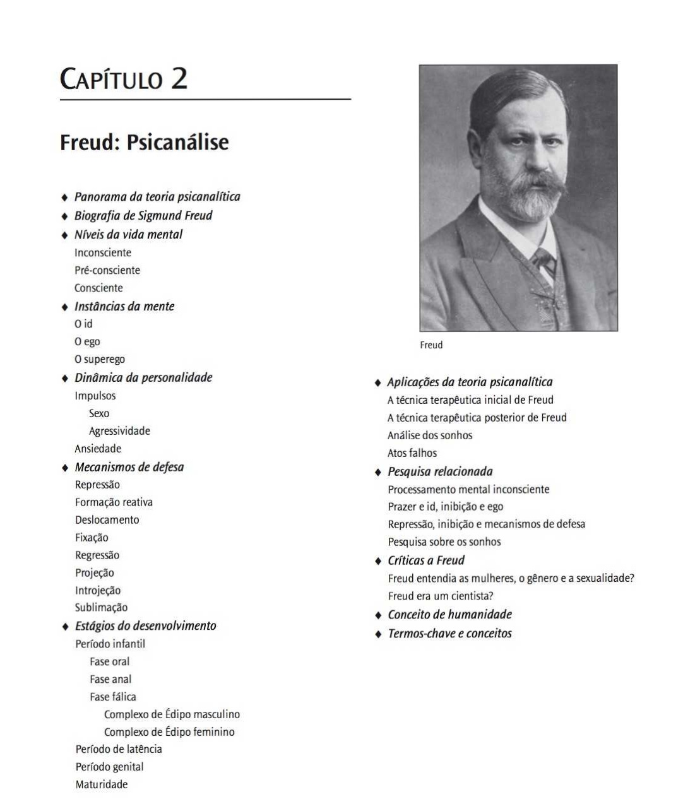
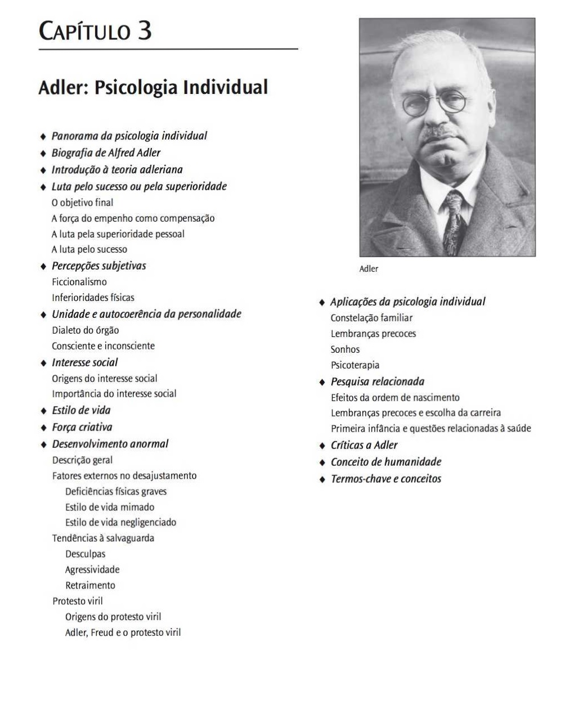
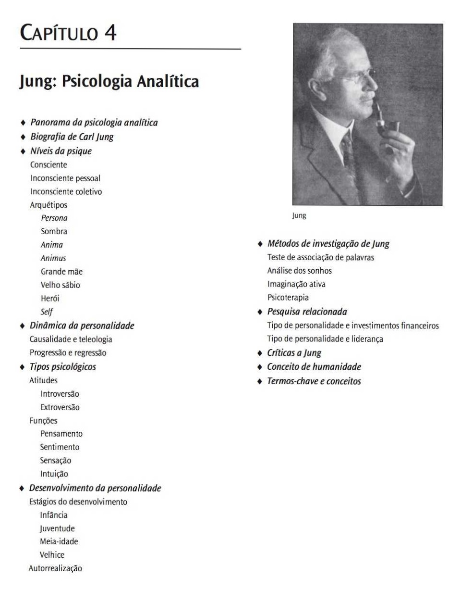
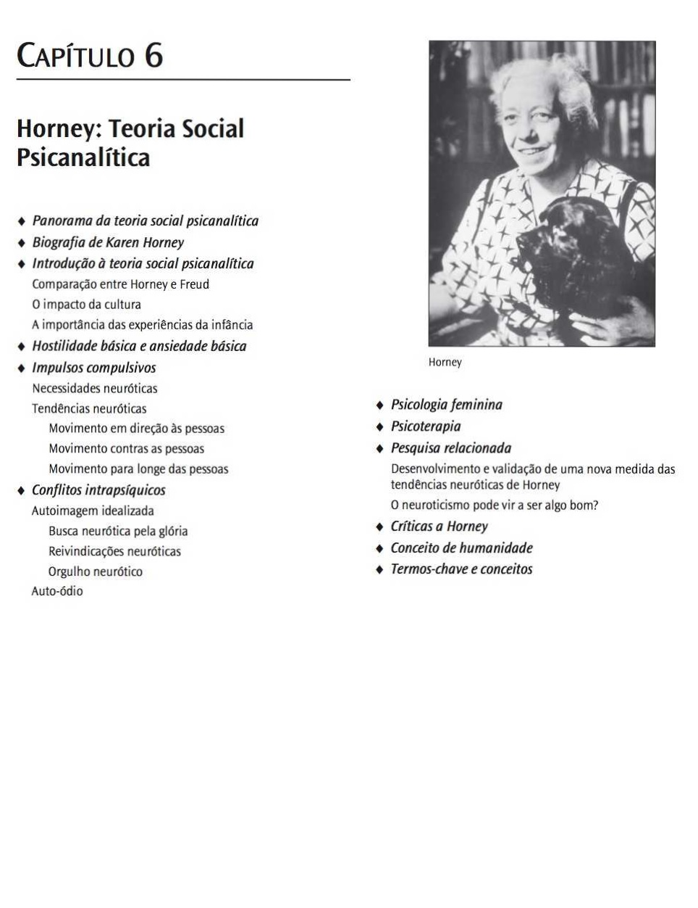
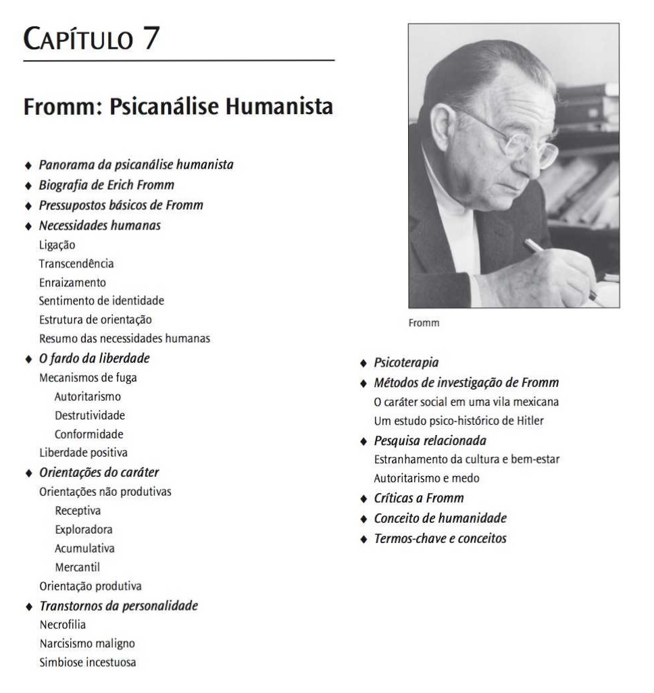
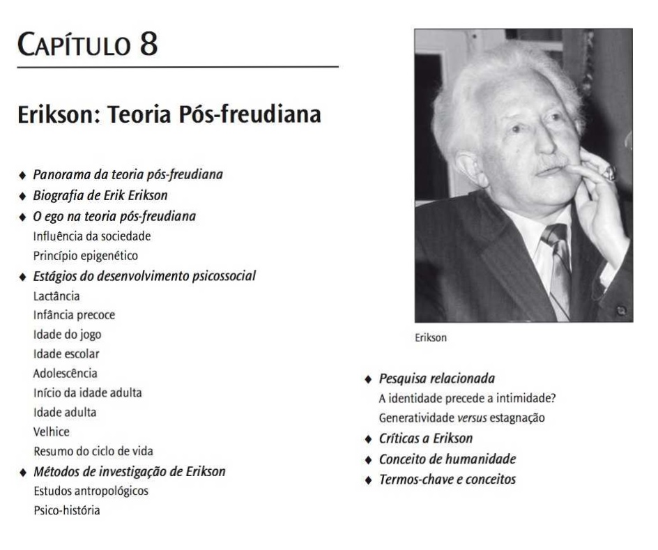

Capítulo 2 FreudPsicanálise
Capítulo 3 AdlerPsicologia Individual
Capítulo 4 Jung Psicologia Analítica
Capítulo 5 Klein Teoría das Relacóes Objetais
Capítulo 6 Horney Teoría Social Psicanalítica
Capítulo 7 Fromm Psicanálise Humanista
Capítulo 8 Erikson Teoría Pós-Freudiana